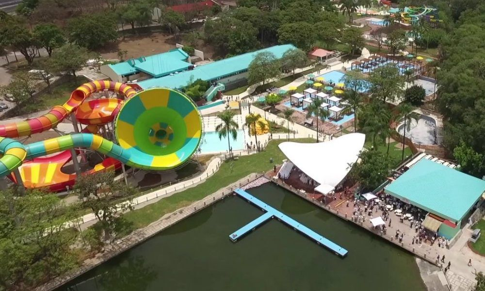
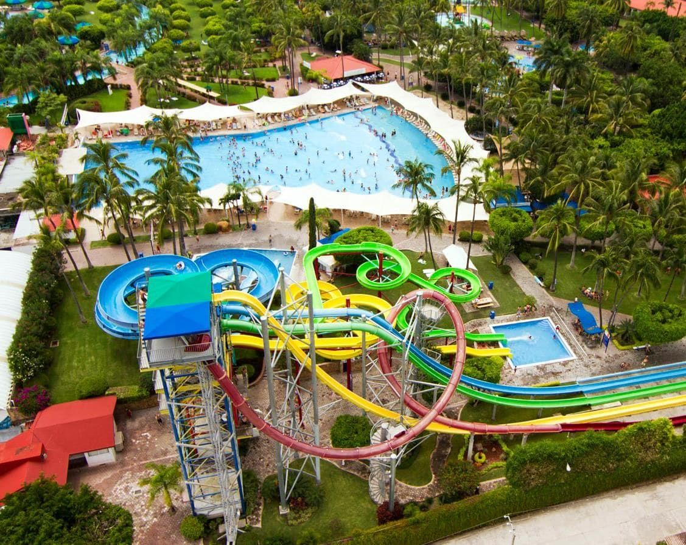

📸 Galería de Imágenes


🏊♂️ Reseña Histórica y Atracciones
Este majestuoso espacio cuenta con una rica historia que se remonta a la época prehispánica, cuando el emperador Moctezuma Ilhuicamina eligió Oaxtepec como su jardín botánico privado y lugar de descanso gracias a su excelente clima y sus manantiales azufrados. Siglos más tarde, en la década de 1960, el Gobierno Mexicano construyó en estos terrenos el icónico Centro Vacacional IMSS Oaxtepec. Tras una importante concesión y una completa remodelación integral, en 2017 el complejo reabrió sus puertas bajo la prestigiosa firma internacional Six Flags, transformándose en un parque acuático de clase mundial.
Hurricane Harbor combina la exuberante vegetación y el clima cálido característico de Morelos con el entretenimiento extremo. Con una extensión de 27 hectáreas, el parque cuenta con un concept de isla tropical que alberga una impresionante variedad de atracciones, desde "Hurricane Bay", una de las albercas de olas más grandes del país, y un relajante río lento, hasta desafiantes toboganes de alta velocidad y estructuras multinivel diseñadas especialmente para los más pequeños.